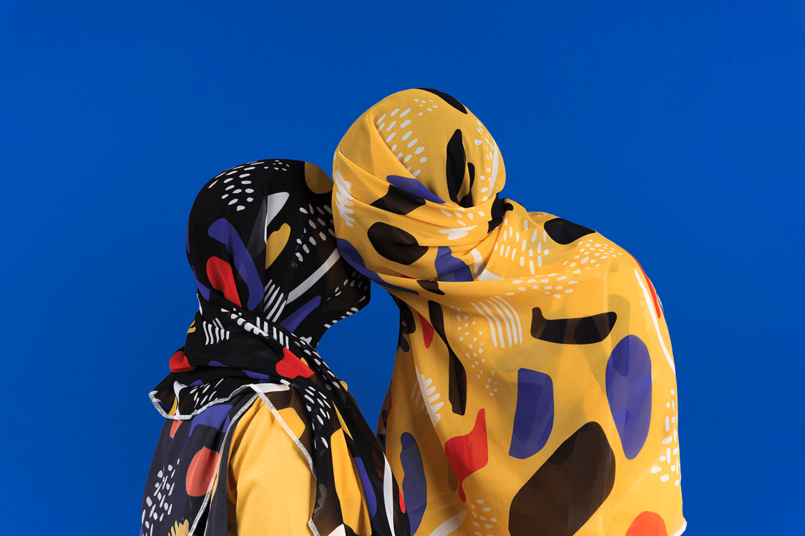
Revelations: The Lovers
The 'Revelations' collection is a wearable work of art that connects
fashion and philosophy. The design process starts with a mystery and
uncovers the truth slowly as you proceed. Inspired by 'The Lovers II'
(1928 by Rene Magritte), we wanted to be those lovers, under these
scarves, getting uncovered. We designed scarves to celebrate the birth
and uncover what is Under. It aims to capture the essence of love,
discovery, and intimacy. Each scarf features unique patterns and vibrant
colors that represent life and emotions. Crafted from high-quality
materials, these scarves are comfortable and visually appealing. The
designs symbolize the complexity of human relationships and the power of
love.
Client | Studio Under
Photography | Aya Wind
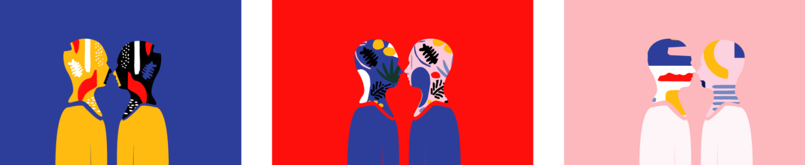
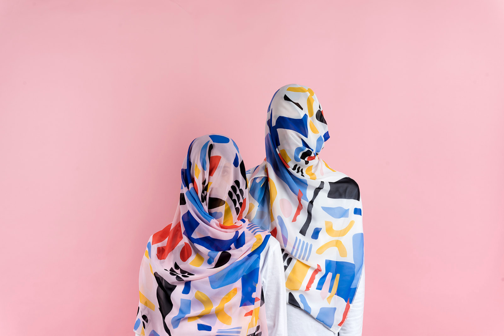
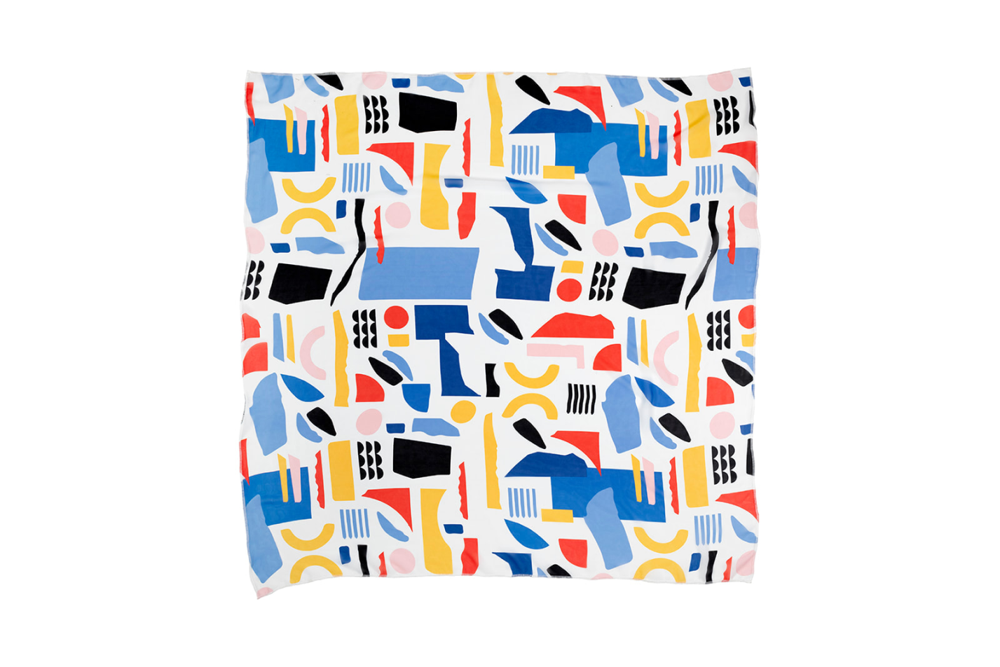
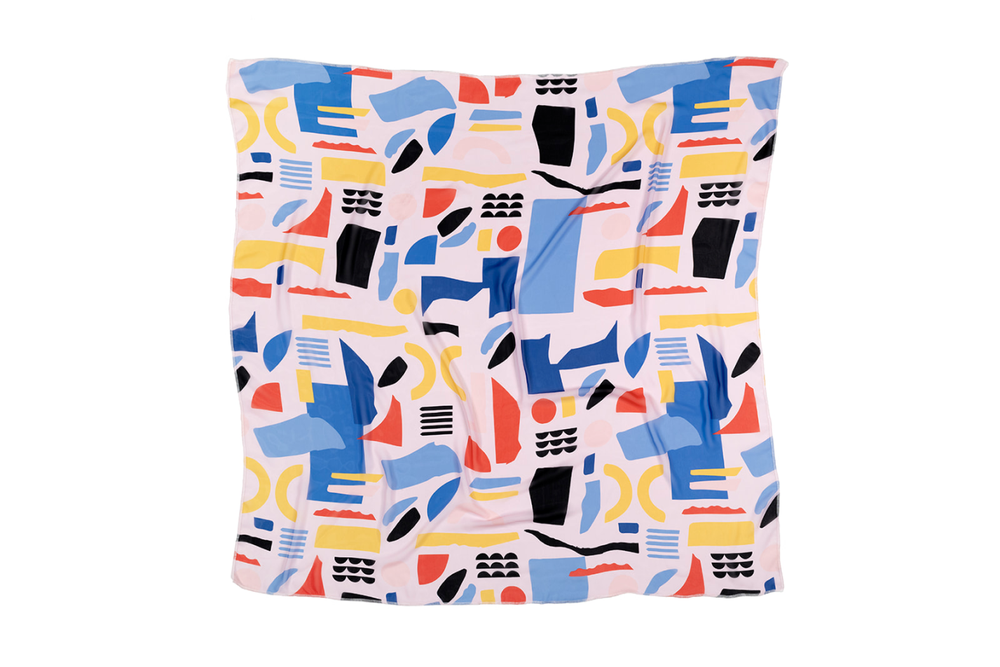
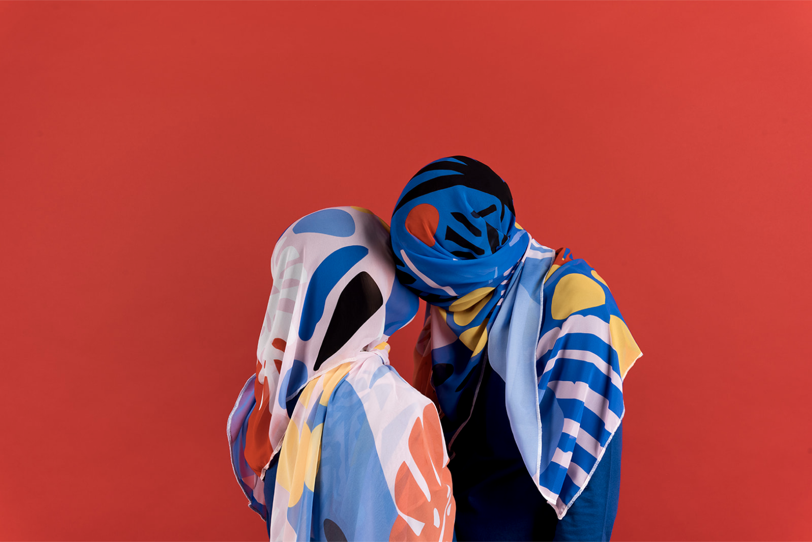
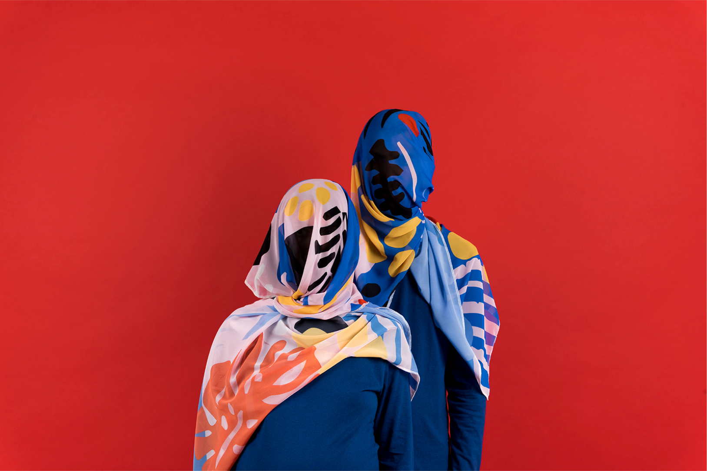
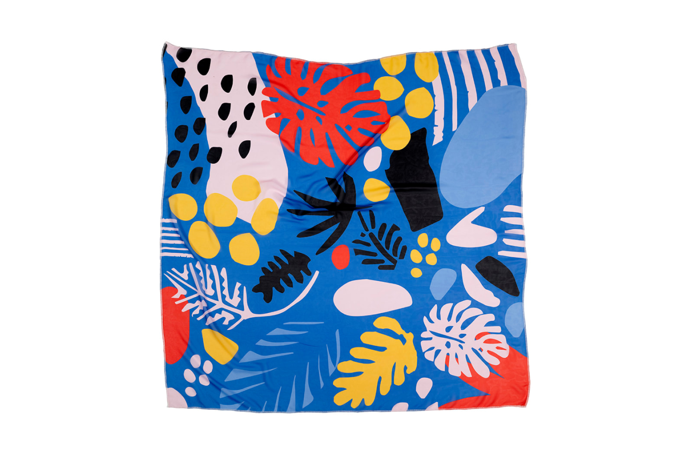
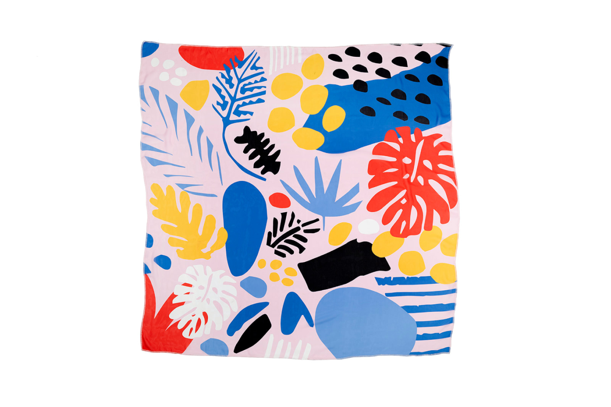
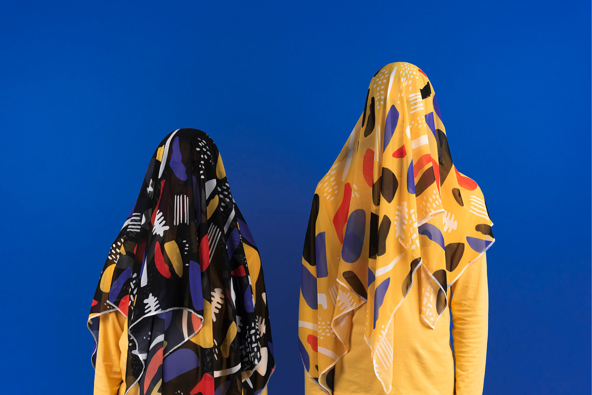
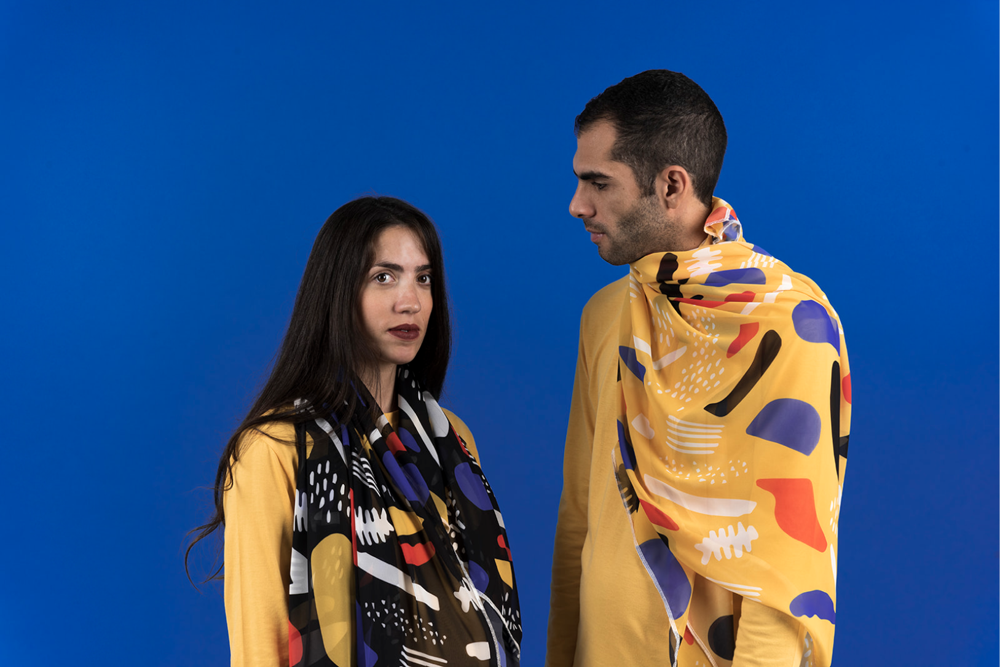
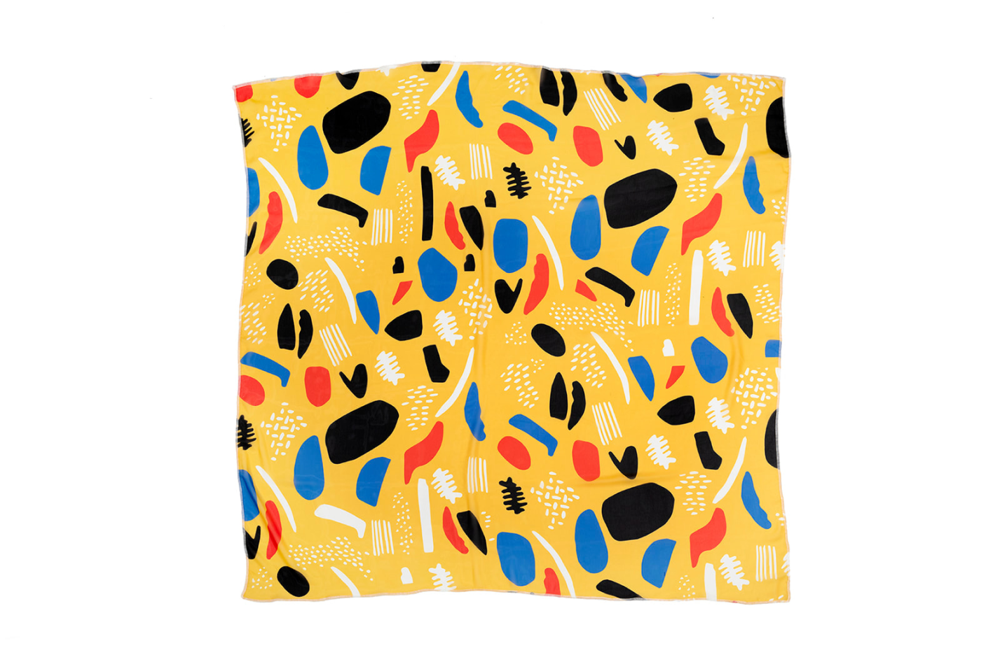
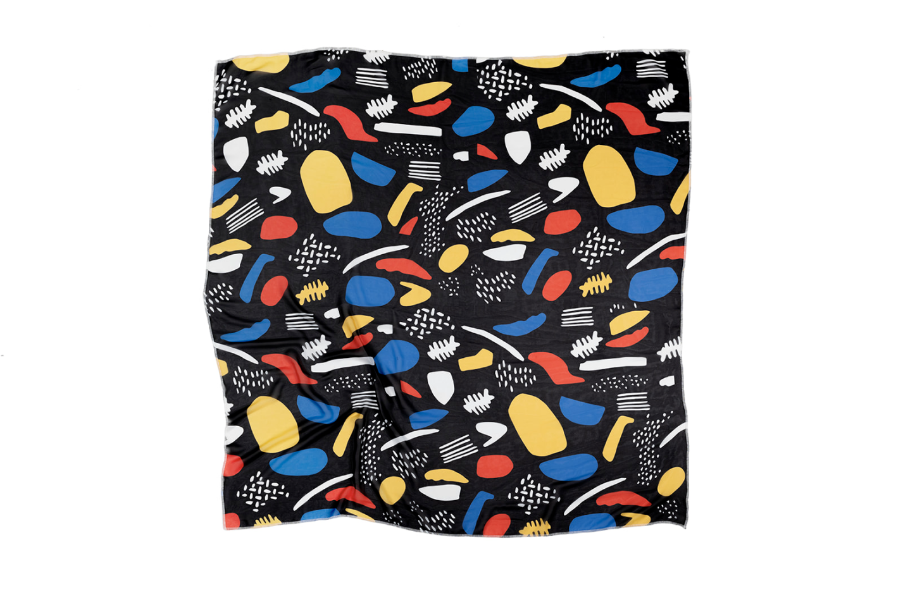